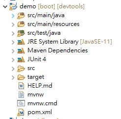
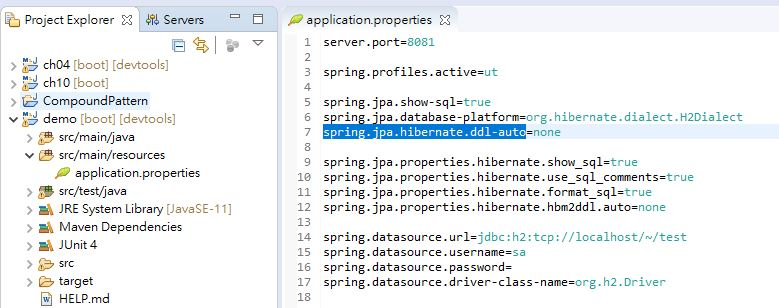
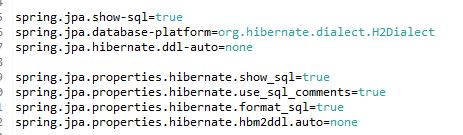
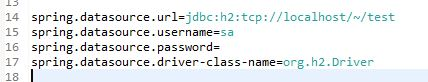

Spring Boot 配置

專案結構

pom.xml 配置
<?xml version="1.0" encoding="UTF-8"?> <project xmlns="http://maven.apache.org/POM/4.0.0" xmlns:xsi="http://www.w3.org/2001/XMLSchema-instance" xsi:schemaLocation="http://maven.apache.org/POM/4.0.0 https://maven.apache.org/xsd/maven-4.0.0.xsd"> <modelVersion>4.0.0</modelVersion> <parent> <groupId>org.springframework.boot</groupId> <artifactId>spring-boot-starter-parent</artifactId> <version>2.5.2</version> <relativePath/> <!-- lookup parent from repository --> </parent> <groupId>com.example</groupId> <artifactId>demo</artifactId> <version>0.0.1-SNAPSHOT</version> <name>demo</name> <description>Demo project for Spring Boot</description> <properties> <java.version>11</java.version> </properties> <dependencies> <dependency> <groupId>org.springframework.boot</groupId> <artifactId>spring-boot-starter-data-jpa</artifactId> </dependency> <dependency> <groupId>org.springframework.boot</groupId> <artifactId>spring-boot-starter-web</artifactId> </dependency> <dependency> <groupId>com.h2database</groupId> <artifactId>h2</artifactId> <!--<scope>runtime</scope> --> </dependency> <dependency> <groupId>org.springframework.boot</groupId> <artifactId>spring-boot-devtools</artifactId> <scope>runtime</scope> <optional>true</optional> </dependency> <dependency> <groupId>org.springframework.boot</groupId> <artifactId>spring-boot-starter-test</artifactId> <scope>test</scope> <exclusions> <exclusion> <groupId>org.junit.vintage</groupId> <artifactId>junit-vintage-engine</artifactId> </exclusion> </exclusions> </dependency> <dependency> <groupId>junit</groupId> <artifactId>junit</artifactId> <version>4.12</version> <scope>test</scope> </dependency> <!-- 加入Mockito的jar--> <dependency> <groupId>org.mockito</groupId> <artifactId>mockito-core</artifactId> <version>2.15.0</version> </dependency> </dependencies> <build> <plugins> <plugin> <groupId>org.springframework.boot</groupId> <artifactId>spring-boot-maven-plugin</artifactId> </plugin> </plugins> </build> </project>
spring boot 的版本 2.5.2 ,專案名稱,專案說明
<modelVersion>4.0.0</modelVersion> <parent> <groupId>org.springframework.boot</groupId> <artifactId>spring-boot-starter-parent</artifactId> <version>2.5.2</version> <relativePath/> <!-- lookup parent from repository --> </parent> <groupId>com.example</groupId> <artifactId>demo</artifactId> <version>0.0.1-SNAPSHOT</version> <name>demo</name> <description>Demo project for Spring Boot</description>
引入的依賴 舉例JPA
<dependency> <groupId>org.springframework.boot</groupId> <artifactId>spring-boot-starter-data-jpa</artifactId> </dependency>
引入的依賴 舉例H2
<dependency> <groupId>com.h2database</groupId> <artifactId>h2</artifactId> <!--<scope>runtime</scope> --> </dependency>
application 配置

sever 設定
sever.port=8081 可以指定專案啟動時的port號
sever.context=/testpath 可以將默認訪問路徑"/"改成"/testpath"
spring.profiles.active 設定
多環境配置作用
在src/main/resources中新建application-ut.properties
裡面可以寫入sever.port=4200,代表ut環境的port號
可以使用spring.profiles.active=ut 來決定要運行的環境配置
JPA 相關設定

h2 資料庫相關設定
